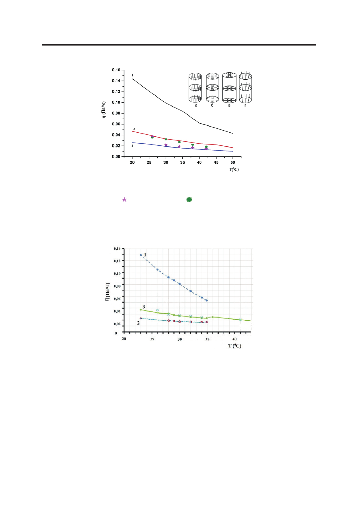

Метод затухающего потока в реологии полимерных пористых пленок, заполненных жидкими
кристаллами
Рис. 7. Температурные зависимости ηeff, полученные из экспериментальных данных
для τ при различных значениях диаметров пор d и открытых трубок D, соответственно:
– 0.6 мкм и 3.17 мм; – 0.4 мкм и 1мм.
Сплошные линии отвечают результатам независимых измерений вязкостей
Мезовича ( 1 – η1, 2 – η2, 3 – η3) [11]. Вставка – различные типы конфигурации
директора: a) аксиальная; б) планарная полярная; в) планарная радиальная;
г) с выходом директора из плоскости пленки.
Рис. 8. Температурные зависимости ηeff, полученные из экспериментальных данных
для τ и пленки с диаметром пор d=0.8 мкм (Х) для 5CB.
Сплошные линии соответствуют результатам независимых измерений
вязкостей Мезовича ( 1 – η1, 2 – η2, 3 – η3) [16].
Предыдущие исследования динамического рассеяния света ПЭТ-пленками, заполнен-
ными НЖК (5CB) [17], показали, что типичные значения силы сцепления находятся в ди-
апазоне 1 ... 5 Дж/м2. Принимая значения W = 3.5·10-5 Дж/м2, K = K33= 11 pN [11], K24 ≈ 2 К
(что примерно справедливо для нематической смеси четырехкомпонентного соединения
4-циано-4'-пентилбифенил• (5СВ, 51%, Merck), 4-гептил-4'-цианобифенил•(7СВ, 25%,
Merck), 4-октилокси-4'-цианобифенил• (8ОСВ, 16%, Merck) и 4-циано-4'-пентилтерфе-
нил• (5СТ, 8%, Merck) – E7 (Merck) [15]), можно оценить значения θr, которые составляют
34
Российский технологический журнал 2017 Том 5 № 5